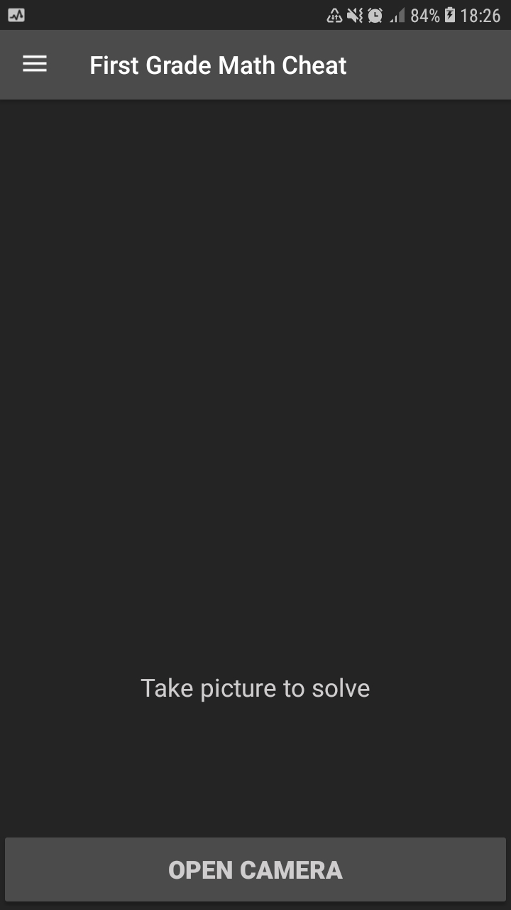
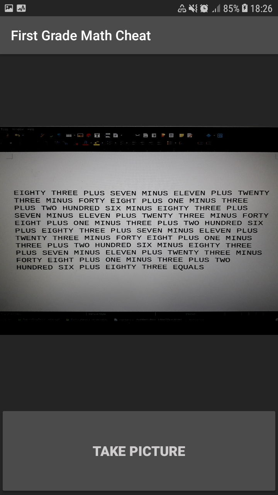
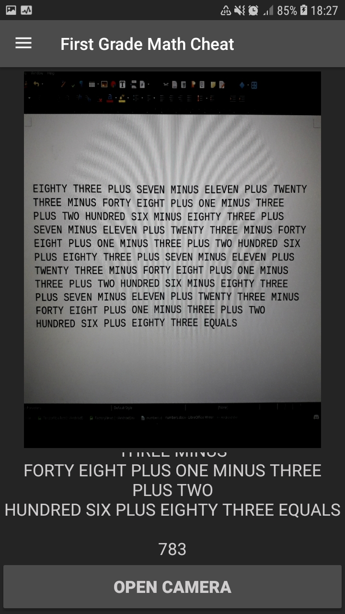

This app uses the ML Kit provided by Google's Firebase. More precisly, it uses its OCR feature, which reads letters from a picture and displays it in a string. This string is then processed and its value is calculated. The picture fed to OCR is taken via camera.
When the app opens, you are presented the screen seen below.
First, we need to take a picture of the equation we want to solve. To do that, press the OPEN CAMERA button which will show you the camera's feed and enable you to take photos. In addition, the navigation drawer is present and can be opened by pressing the top left "hamburger" button, or by swiping from the left edge of the screen to right.
Second, find a suitable equation to take a picture of. As seen above, the equation needs to be written with words. Only PLUS and MINUS operations are supported. For example, one correctly written equation is "THREE MINUS FIVE PLUS TWENTY SIX EQUALS". Words must be written in uppercase.
As seen, the app is capable of correctly solving very long equations. The bottleneck here is the quality of the picture, as the resolution of the images doesn't exceed the phone's screen resolution. The obvious fix would be to increase the resolution, to make it independant of the screen size, but for now, this is good enough.
With that in mind, try to take the clearest photo you can. You should use a Mono font (I use Liberation Mono). Mono fonts are easier for the OCR to read. The picture should only consist of the equation, as other text can interfere.
When satisfied with the picture, press TAKE PICTURE.
Finally, you are presented with the picture you took, and the OCR's interpretation of said picture. Below the images is a textbox which can be scrolled, if the equation is long. You should check the output string for mistakes, and the result given. Result is the number appended at the end of the output string.
If the equation hasn't been read correctly, try to take a better picture, or a smaller equation.